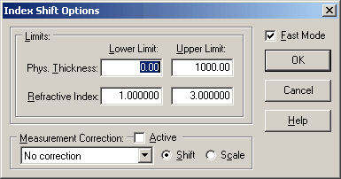

Index Shift
Index Shift is a specialized type of Characterization procedure. This option is typically used when the spectral dependence of the refractive index of the layer is known, but there is a suspicion that the refractive index may be shifted up or down by a constant value.

Index Shift characterization option requires the specification of limits for layer thickness and refractive index.
This option can be utilized in conventional or Fast mode, similar to the Characterization option.
Additionally, the Measurement Correction option can be applied if larger values of systematic errors in the measurement data are anticipated.